the extraordinary Adventures in neurodiversity of Dougie Jones appetites : coffee : pie - strange (tendencies)
"Modes of existence have an inbred appetite for each other, and cannot easily sustain themselves separately, try as they might sometimes."
hello-oOo-ooOOoooOooooo
‘to not look at the world with new eyes, but seeing difference in the consistent emergence of novelty, only to be covered over and subdued by possibly suffocating layers of typicality’
dj - Coop
we don’t know what a body can do; perhaps a neurodiverse body such as Dougie’s
can carry, spark and intensify the affects and percepts that otherwise get parsed (out).
perhaps we encounter in Dougie what Deleuze and Guattari will call an aesthetic figure:
an “image of a Universe” or a “phenomenon”. It is clear that as such Dougie surpasses
the doings of psychosocial types: there is no category, no form, no being that Dougie conforms
to; rather, Dougie bodies the affects in full suspension of any parsings. There is no time that any
one can ever capture its doings.
▂▃▄▅▆▇█▓▒░someone manufactured you░▒▓█▇▆▅▄▃▂
shape-shifting coop bad-coop DJ / possession - its agency is not produced by its own self core but by strange voices that stimulate it. Non-neurotypical body in its relationality with the outside (but immanent) and the field. TP demonology (or spectrology?). Demonology implies an hierarchical organization separating different kinds of entities through their powers of agency (similar to royal titulations). Spectrology implies not a category but entities that cannot be classified and are not separable but always living in a parasitic mutual inclusion. === THE RED ROOM === nor black lodge or white lodge but the intermediate world in which all the beings come to hobnob. the purple sea - realm of undifferentiation. Not a threshold but a limit.
“Memories of a Sorcerer, I. A becoming-animal always involves a pack, a band, a population, a peopling, in short, a multiplicity. We sorcerers have always known that”
spectres of neurotypicality flirting with dougie's mode of existence (B.O.B.)
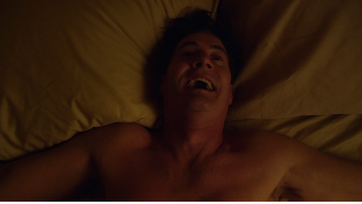
neurodiverse joy and play - casino/sex (impersonal, yet 100% personal)
what is adventure? Adventure time, in drift, exploration of the event’s unfolding
techniques - martial arts learned from cooper's spectre (what a body knows), remembered but never forgotten.
Curiosity & appetite

"where's home?" in drift :: dougie jones cannot take position
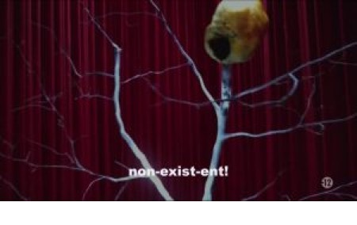
from non-exit-ent to minimal existences
the non-exist-ent is the spectral quality in dougie's mode of existence. dougie is non-existent because it cannot qualify to the affordances needed to be part of the existing neurotypical world. It cannot pertains to a world that takes into consideration only the productivist masculine attributes, even if they are used by non-men. david lapoujade thinks the minimal existences as the tiny beings that cannot have guaranteed the rights to exist in our ontology system. e.g: the spectres were slowly diminished ultill their disappearance from the world of christian philosophy/religion, being substituted by an official demonology with grades of agency (high to low demons). the non-existent is the schism on being, 1+1 = 3, it shouldn't be there but it's there bringing a quality of the Unheimlich. but dougie doesn't wanted to be included in the legal/social system of the boring humans, it wants to feed its appetites: coffee, pie, playfulness. dougie is a free radical.
Who is invisible enough to see you?
But we would misunderstand invisible as ‘not being there’; invisible is 100% there, as Dougie, but different. Invisibility not as an absence but as a point in which it cannot be seen through the bare eyes of neurotypicality. Invisibility as productive. A neurodiverse body, as other minor bodies, the black body, the migrant body, the native body, is always non-existent: it cannot be seen
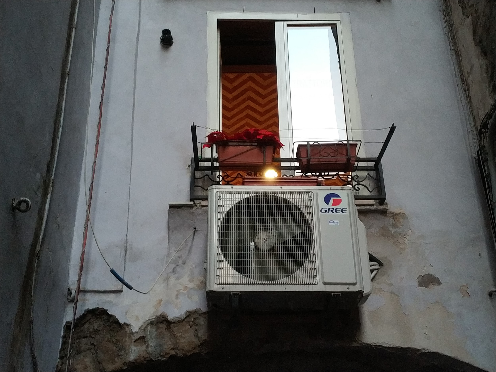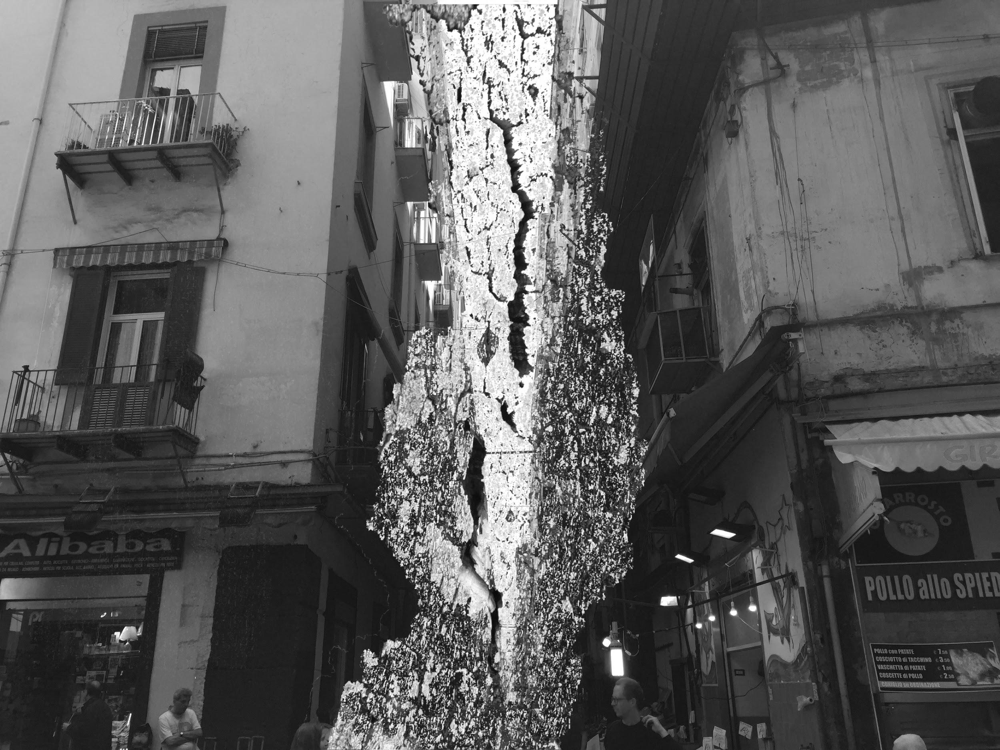
nononononononononononononononononono
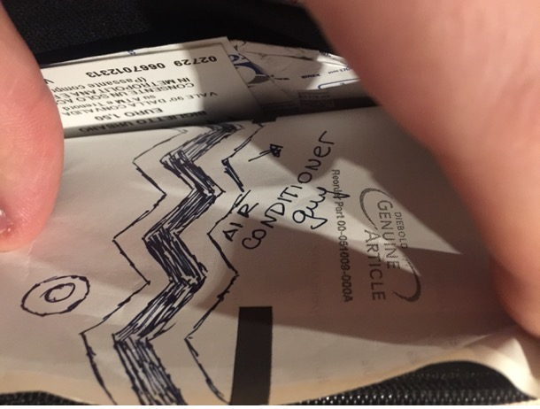
“What neurodiversity teaches us, it seems to me, are techniques to become attuned to this more-than, to become-attuned to the ineffable amodality of experience that activates the contours of the event toward a moving, an encountering, a being-moved in a complex ecology of practices." (Manning, 2012, p. 132)
In order to see me (and my army) you must turn yourself invisible.
Who has time for dougie's adventures?
It's necessary to create time. No one has time for dougie's adventures. For only many can have time for those adventures. Only many not as a group that sits on a circle but as a multiplicity of voices that can murmur out themselves through one or more bodies. dougie, red-room dougie and new dougie are the same but also different, since they're made of the same particles of matter (garmonbozia proteine). dougie remember his past lives but not as different lives. for dougie cannot be judged, a multiplicity of souls cannot be judged because they carry seeds of contradiction (their appetites are different but have some shared amount of qualities). the same can be applied to "bad-C".
techniques to create time against the de-volution of chit-chat . "call for help?". internet of actual occasions <==> multiple modes of landing that doesn't need a birth certificate. the parliament of creatures in mastodon is a tentative and slightly different of the experience in slack. slack slacking itself.
dougie interrupts everyday office-work to follow his appetites, his body doesn't understand what is to feel guilty, when shifting from the productive neoliberal mode of time organization to a distinct one. everything can be interrupted, so dougie can appreciate a big cup of black coffee or a piece of cherry pie. his appetite will even later save dougie's life when stuck on an ambush. These characteristics probably have something to do with the impossibility of following neurotypical movements (see for example, the figures of dougie on the elevator below and their struggle).
ft [5:43 PM]
i think chit-cat-chat should be more valued
techniques to create time
chit-chat is needed to confront the habitual logistical talks (i don’t have time to lose)
maybe we need to lose time no?
losing time according to the habitual roles of full agendas = creating time
but also chit-cat-chat time is helpful to develop more fabulaton-pills
also also there is this logic that implies: “well if i am chit-chatting i should feel guilty because i didn’t do anything”… guilt is shit no?
the good thing is that dougie’s body doesn’t understand logics of being guilty
:dougie:
:otherdougie:
there’s always more time for coffee
advvv [5:50 PM]
maybe fabulation-pills are what goes into the coffee, no?
like Bergson’s tea
(slack creaturesque conversation on #FCLC channel)
Dougie on the elevator: interdimensional couriers = dougie travels through electricity and delivers traces of inconsistent qualities to the normative world: qualities that shouldn't be there. transduction but not translation. involuntary world(s)-wanderer. whereas other characters pursue methods to access other dimensions through sorcery (summoning entities) or physical entry points (researching specific places in which electromagnetic anomalies may distort the topology of reality allowing the emergence of shortcuts that lead to other dimensions). through those holes, we could say, sometimes some packages can be sent. for example, it's clear that laura was a intentionally delivered package under the form of a germ on the frog-alike creature, as an answer to the contingentially delivered BOB through the explosion of the atomic bomb. a care package, but very different from a UN food-medicine package delivered to war areas falling of planes.
|͇̿ ͇̿ ͇̿ ͇̿)|̶͇̿ ̶͇̿ ͇̿ -T |̶̿ ̶̿ ̶̿ ̶̿'||͇ ͇ |͇ ͇ ͇ ͇\̿ ̿
it seems that the aircoguy was at the same time the deliverer and the qualities that were delivered. a package of qualities that disrupted a regular waking up process. it's not clear, though, if it was in the air-conditioner guts since those porous surfaces response to a topological organization of space. also the dimensions are not transcendent, they may have been established as metaestable stratas, but they're accessible. it's not clear if there's a not-transcendent but outside-ish place from which the disruptors can come, that would be the almost fully spectral creatures capable of de-organize or fully deterritorialize anything they touch. i want to believe. if the answer = yes, they could be manufactured into pills of de-T that could be thrown into ambients that are too territorialized under some forms like = reunion circles, barbecue-circles, people's circles. de-T pills act de-circling forms.
who is d.B. Cooper?
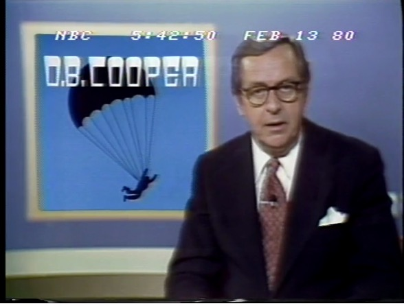
"no parachute, no briefcase, no cooper and no bombs", says a news narrator from a NBC channel in Portland, 1980, nine years after his first appearance/disappearance. also described as a "undistinguished character", Cooper appears to have completely vanished after jumping from a boeing 727 on a parachute of a Boeing 727, carrying with himself 200.000,00 USD as a ransom to release the passengers of a commercial flight between portland and washington. another newsreel from 1980 CBS also claims that no sign of cooper was found, after they extensively researched the columbian river, except for very few pieces of bank notes that could be part of the ransom. at a tavern, which keeps souvenirs made upon cooper's character, drunk men affirm that cooper is still alive, contradicting FBI's official discourse about his probable death. d.B. Cooper was never identified, even having a "very distinguished face", as it has appeared and disappeared on the sky.
Cooper is missing, yet there is Dougie. The people are missing. In so many ways, or in a manner, Dougie is the pure potential to any Cooper informing. “This acknowledgement of a people who are missing is not a renunciation of political cinema,” Deleuze writes, “but on the contrary the new basis on which it is founded” (C2: 217). Dougie bodies a modern political cinema, appetites roaming freely, suspending any typicality that normally pervades the screen.
Many Coopers, always more than one
"we took the evidence down to only a handful of a thousand of people who could be cooper"
(NBC Today newsreel, Jan 27, 2017)
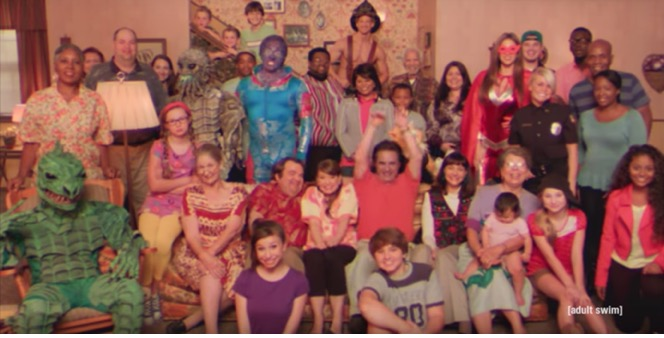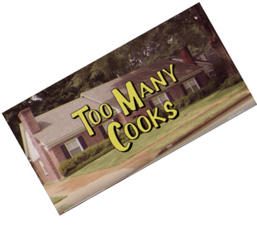
It’s always more than one, and this reflection doesn’t refer only to the voices that are loaded in each word of a spoken discourse, but as a way to think the body as an archive fulfilled with organic and non-organic creatures. Atenagoras, reminds us Ludueña, was already thinking about the anthropophagy of each being that speciates together, human or non-human. The Greek philosopher and ancient influential Christian theologian stated that “many bodies (sómata), who miserably died in shipwrecks or in rivers, ended up being eaten by the fish” (Ludueña, 2010, p. 180). This also applies to decomposing bodies of warfare that stayed putrefied in the fields ready to serve as a feast to all sorts of animals, including the ones that would be later haunted by humans. After the ingestion, “the separation (diákrisin) is impossible” (Ibid.). The issue looks obvious after it’s impossible to determinate “in which measure could we consider a separated individual - and therefore separable a posteriori - a human whose flesh has as its origins the another individual’s semen and that semen has as its origin the flesh of another individual who earlier was anthropofagically eaten” (Ibid., p. 181). (L'evenement du Spectre, 2018)
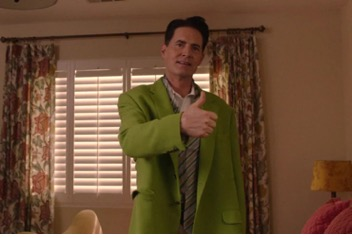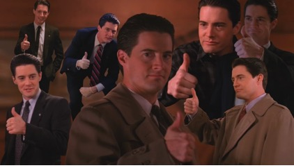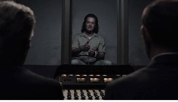
100%, full intentionality. Cooper is always there, many Coopers. Cooper is a multitude, by and in itself. Dougie Jones is then not a lesser Cooper, Dougie Jones is a different Cooper, one of the Coopers. Dougie Jones is more than Cooper as is he not just Cooper. Who is invisible enough to see Dougie not just as Cooper? Perhaps Candy grasped some of Dougie’s anguish for being taken as someone else. Never forget: Richard and Linda. "She's dead. Wrapped on plastic". During the first minutes of Twin Peaks: episode 1, this phrase secretly condensed one quality that transversed all beings living in the black lodge, white lodge or the world we fail to believe it's real: plasticity, or, in the terms we want to stand up for here: shape-shifting. The entities that may be usually related to black and white lodge are the Man from another Place", also known as the dancing dwarf, and the giant. Lately the Man from Another Place was transmuted into an arm, that grew on a tree branch, a creature, that we agree with the following writer, can be seen as a mischievous entity. "Related to MFAP as his opposite outside of the Red Room is the Giant, whom Cooper meets in visions when he is awake. These two ghostly beings are not related to either good or evil; they seem to dwell somewhere in between that dichotomy, and establish the link between both. They are ghosts of liminality." (Elferen, 2010, p. 283).
Lots of Dougie, never less: missing is not the same as lacking
Lack this, lack that, psychoanalysis had its mouth full of lack. Apparently this defined ‘us’ humans, always lacking something. Such fundamental lack transferred to the screen, where what would be lacking was always in plentitude: psychoanalytic terms to dissect movies, the kind of discussion in which Edward G. Robinson's cigar is never just a cigar. Even Edward G. Robinson could not escape the holdings of such universally tinted theory. But there is no lesser of Cooper in Dougie, nor is there a more of Cooper in Cooper. Dougie is Dougie. Dougie is in plentitude, through his appetites creating whole new universes in its own affect.
https://www.youtube.com/watch?v=AGJbH21V1AI
So
while Cooper might be missed, there is always a people to come. The suspense of
Cooper’s missingness is precisely what makes other modes possible. Dougie is a
monument, fabulatory forces in affect and percept.
The magical drawings of dougie jones
Perhaps
revealing in typicality, but the lines are just lines as much as red is just
red. To be able to draw just a line means to not parse all of the abstractions
into its act nor to rely on pure habit. Just a line is the drawing of the
event, while simultaneously its ingression.
Fabulous news
December 14th, 1971
letter from d.B. Cooper
"i have only 14 months to live"
November 11st, 1976
Portland, OR
"there was virtually no chance that that man could have landed non-injured" (FBI agent)
"there's a chance that this man is watching this program right now"
May 02nd, 2018
44.512444, - 103.820722
"ALL OVER THE PLACE - In recent digital excavations, what is considered to be the Holy Trinity has been uncovered. In the tri-partite relational scape of hit - hat - hot, the powers of the false have brought into the cosmos new fabulatory forces that have unforeseen consequences. It is said, in ancient pizza-mythology, that once the holy trinity is to be uncovered, pizza will gain completely new circulations of appetite never seen before. The other wordly practices that emerged within this novel tri-force might take on the strategic duplicit power as we have seen it before in Zelda 2: The Adventure of Link. Indeed, the adventure of relation turns out to be a dance of doubles. What consequences this might have for the pizza loving world, and for that matter, the rest of the world, is at this point still unknown. Fab News will to date you up as more unfolds." (FLCL)
Year Zero
Janaki Forest
airCO_RP decrets bankruptcy
on a desperate measure to save his assets the secretary declares that the alleged counterfeit pills are not valid unless validated by official totem machines.
scrambled message delivery through p2p mammoth-messenger channels
decrypt key = .--. .-.-.- .. .-.-.- . .-.-.-.tinycooper
May 04th, 2018
Dollarama store
the bag was found
filled with 3 pieces of broken mirrors
dozens of old RAM memory chips
18 de-T pills (1 for each weekday)
Incubus & Succubus
The most widespread opinion, perhaps, expressed by Jean Vineti, inquisitor at Carcassonne, in his Treatise Against Those Who Invoke Demons (ca. 1450), is that demons are transsexual. Functioning as succuba with a man, they gather sperm and later deposit it in the vagina of a woman with whom they act as incuba. (Culianu, 1989, p. 149).
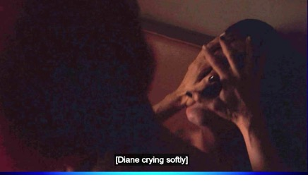
very important = incubus and succubus are never alone
they emerge in gang formations
each gang is moved by the desire to make you part of the gang
you're not asked to join because you already are part of it
you cannot also ask to leave because leaving is not possible
(even if you already left)
airCO_RPlogo-firstera.jpg
fab news are not fake news
while the first seek to produce the movement-moving
the last aim to establish motionless truths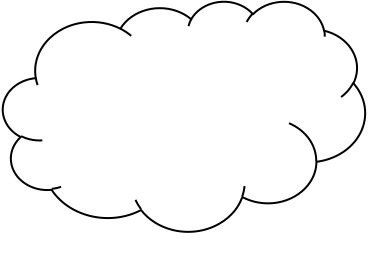
tvG claims that never aired any kind of misinformation
but only content with educational purposes
through the format of useless tutorials
References
Ludueña, F. (2010). La comunidad de los Espectros I. Antropotecnia. Buenos Aires: Mino y Dávila.
Ludueña, F. (2016). Princípios de Espectrología. La comunidad de los Espectros II. Buenos Aires: Mino y Davila Editorial.
Manning, E. (2012). Always more then one: the individuation’s dance. Durham: Duke University Press.
Van Elferen, Isabella. "Haunted by a melody: ghosts, transgression, and music in 'Twin Peaks'." (2010): 282-295.
Film:
Twin Peaks: The Return (Season 3) (2017). Lynch, David. France; USA. 18 episodes of around 1 hour.
Newsreels:
From Vanderbilt Television News Archive (thanks to MS):
1971-11-25
- 1971-11-26
ABC Evening
News
CBS Evening News
NBC Nightly News
1971-12-14
ABC Evening
News
1976-11-25
NBC Nightly News
1980-02-13
CBS Evening News
NBC Nightly News
2017-01-17
NBC Today: D. B. Cooper Search: Scientists Say They Have New Evidence In 45-Year-Old Case
Available at https://youtu.be/cHXCznZL2-0.